I usually preface my blog posts with a title, but in this case I believe a picture is worth a thousand words. Becoming a web developer hasn't been an easy journey, but having a close group of friends made it much more manageable. Many thanks to the Mule Deer Cohort of 2014!
Final Project:First-And-Learn
Before we graduated from DevBootCamp, we are required to create a solid application that showcases the skills we picked up. Some groups decided to show their ability to pick up new languages(such as React, Backbone, and EmberJS). The group I landed in decided on the process of creating a Rails application. Since we all had experience working together on hackathons and other projects, we were able to jell quickly. The application we would create would be a way to organize online tutorials, videos, and articles to learn something. It sounds pretty generic, but what we produced is a thing of beauty(code-wise). We were able to get a 3.7 out of 4 on CodeClimate at our peak, and remained in the mid-high 3s for the rest of the time.Here is a link to the site itself.
First and LearnHere are the slides from our final presentation
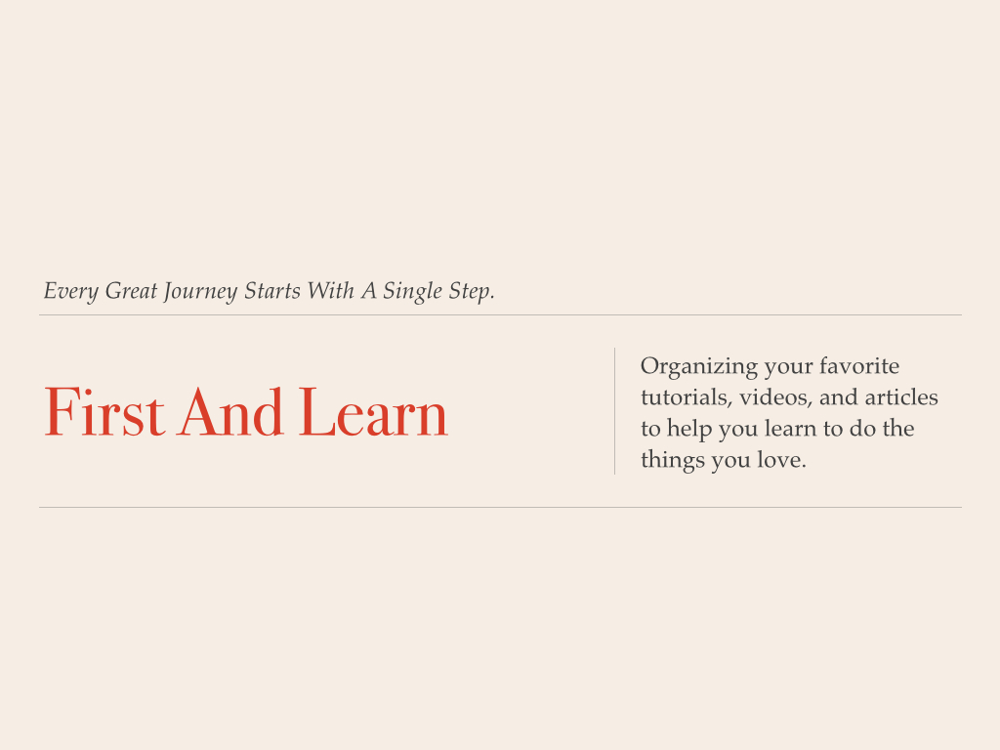 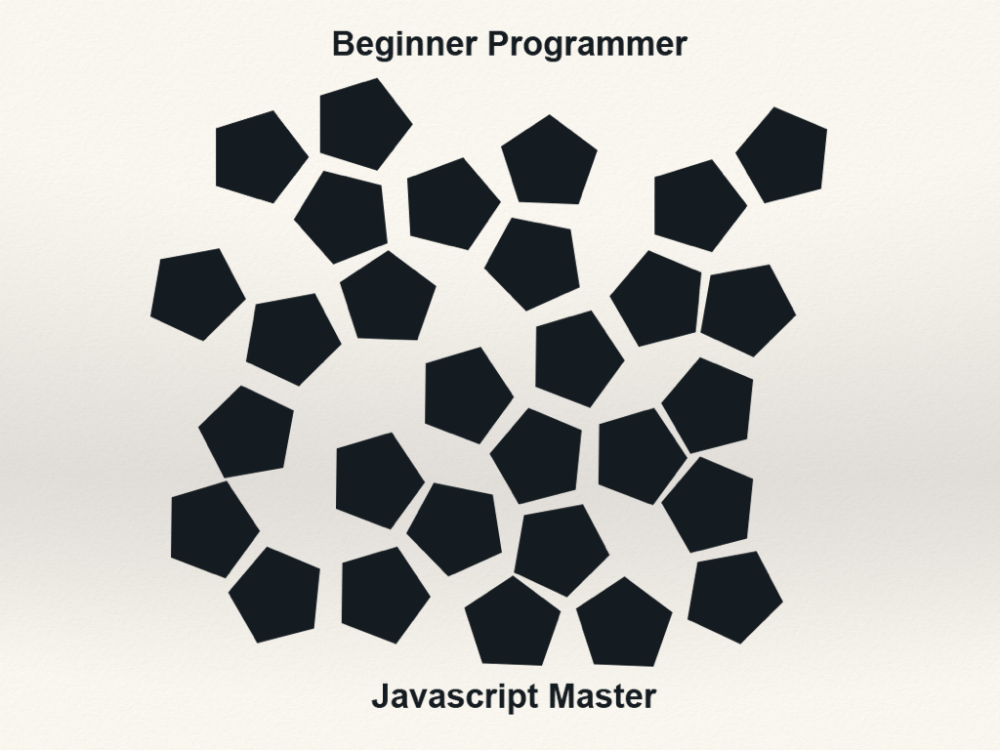 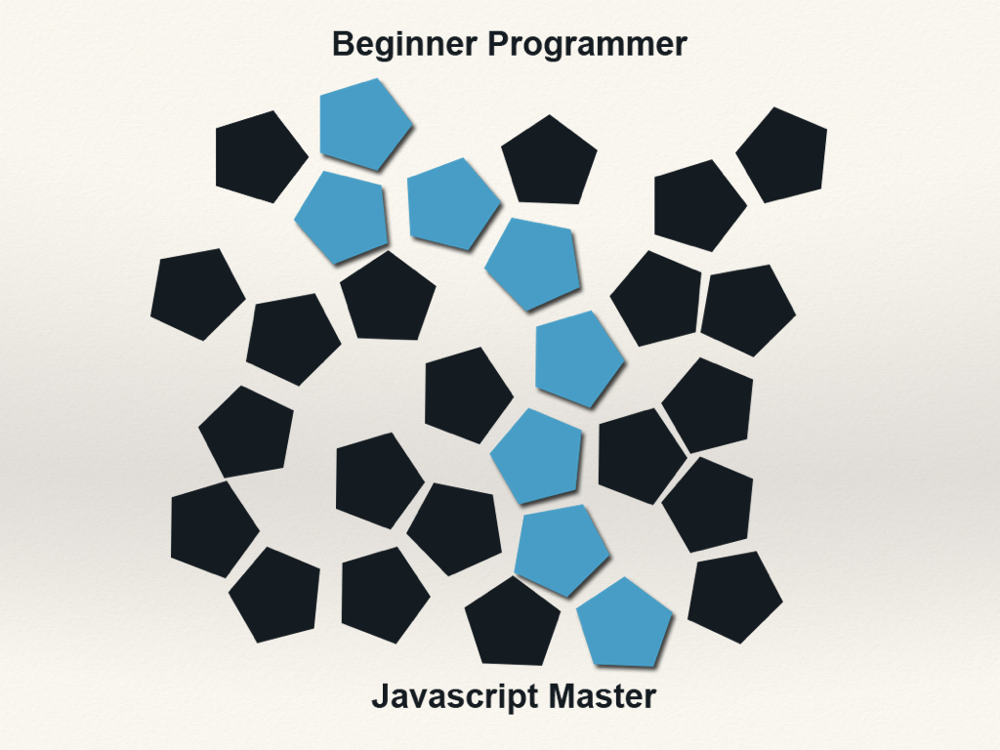 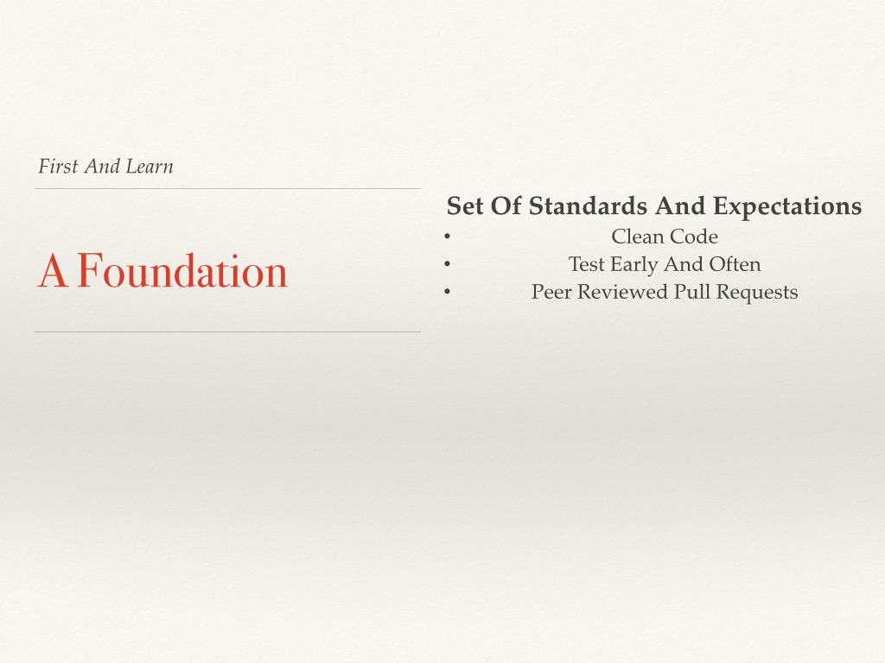 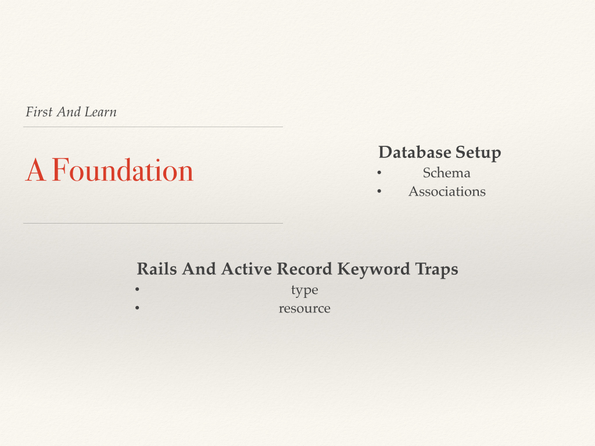 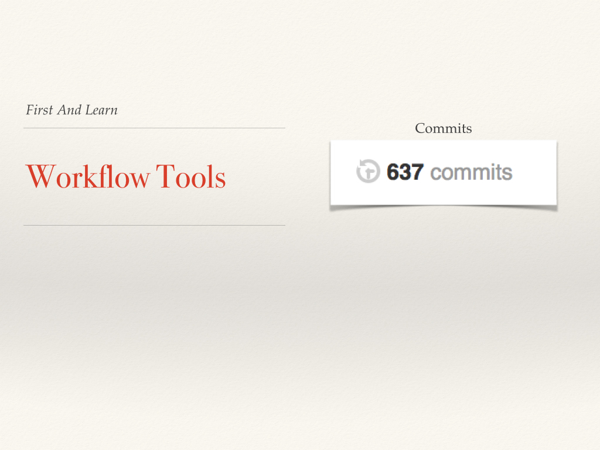 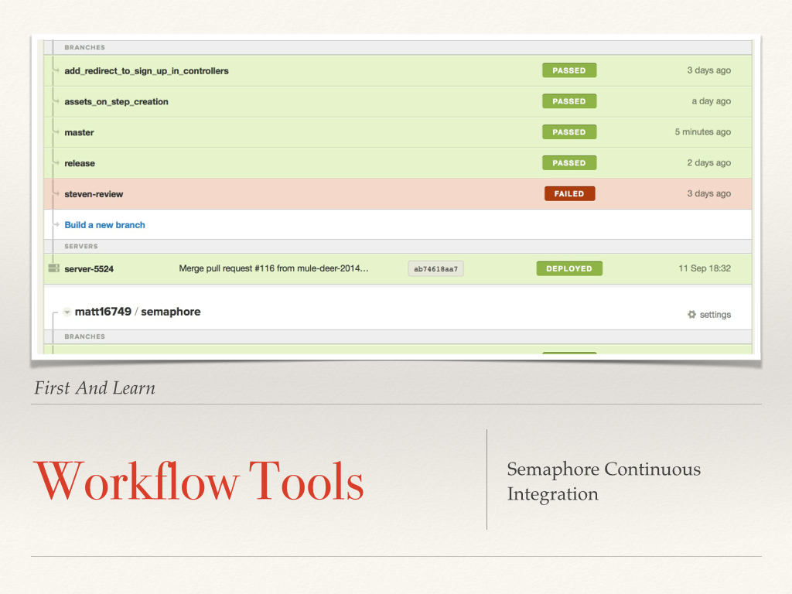 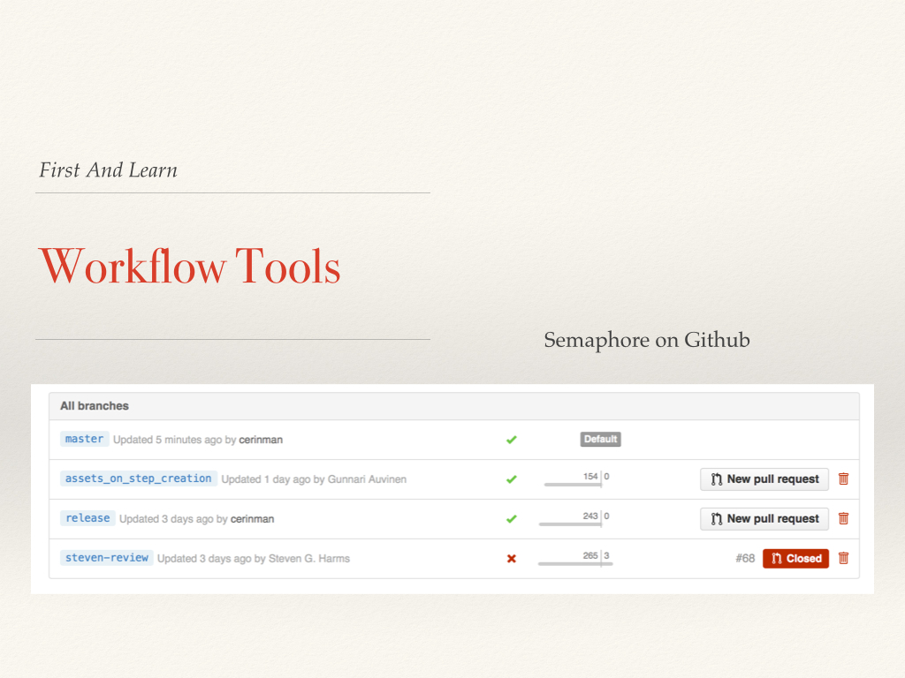 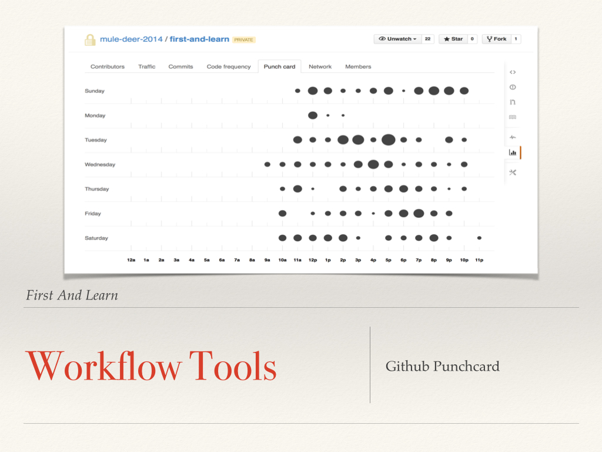 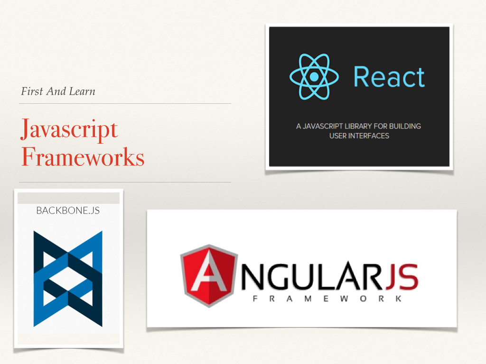 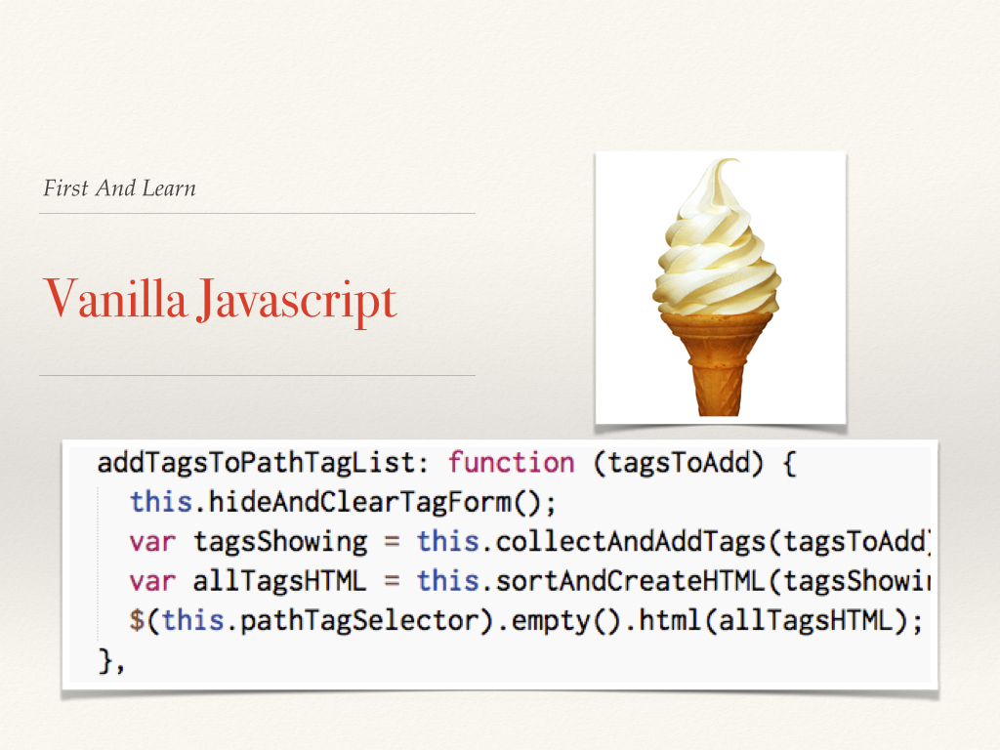 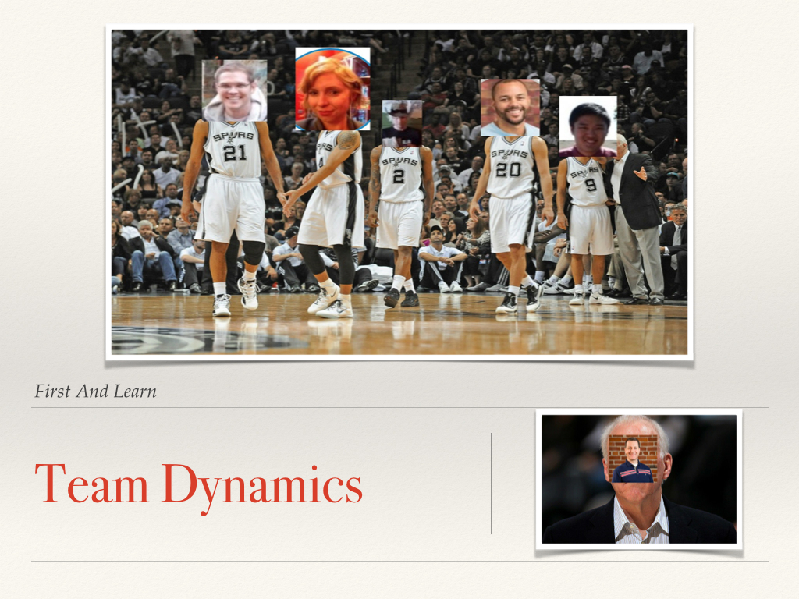 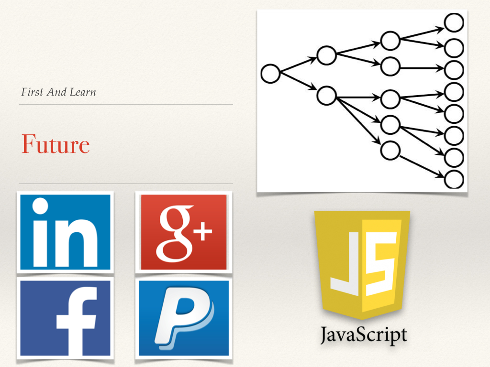 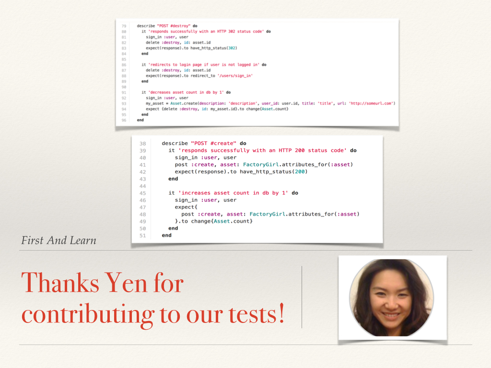